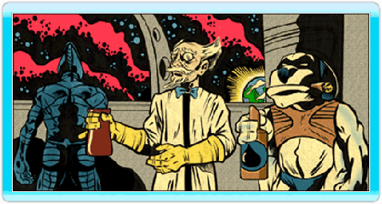

6 |
L’histoire |
 |

Kurt Hectic n'avait jamais rêvé d'être un héros. Il était heureux de son sort, ne demandait rien à personne et coulait une vie tranquille dans l'anonymat complet. Mais le destin en avait décidé autrement... Kurt était employé par l'excentrique professeur Fluke Hawkins pour faire le ménage dans son laboratoire. Il n'aurait jamais imaginé que son travail l'amènerait à quitter la Terre pour devenir le premier balayeur de l'espace. 
En effet, pendant trop longtemps, le professeur Hawkins avait été tourné en ridicule par ses collègues scientifiques. Ils le traitaient d'excentrique et mettaient en doute ses méthodes. Excédé, le professeur avait donc décidé de quitter la Terre afin de pouvoir continuer ses travaux en paix. Son vaisseau, le "Jim Dandy", avait décollé dans la discrétion la plus totale et ne devait revenir que lorsque le génie du professeur serait finalement reconnu par ses pairs. Les années passèrent et tout le monde oublia le professeur. La plus étonnante des inventions du professeur était Max, son chien à six pattes, la première véritable réussite d'Hawkins dans le domaine de la création d'une intelligence artificielle. On pouvait parler de réussite car, pour la première fois, Max n'avait jamais tenté de s'attaquer au professeur ou de réduire l'humanité en esclavage. Assumant parfaitement son rôle d'assistant, Max s'acquitta de la lourde tâche de protéger le professeur de ses propres inventions. Sa bonté d'âme et le plaisir qu'il tirait à rendre service n'avaient d'égal que son goût prononcé pour les armes à feu les plus dévastatrices. C'est de façon assez inattendue que le professeur Hawkins se vit offrir l'occasion de prouver son génie. En effet, des créatures monstrueuses, issues d'une autre dimension, attaquèrent la Terre afin d'en exploiter les ressources en minéraux. D'énormes "moissonneuses" ravagèrent la surface de la planète et anéantirent des cités entières. L'humanité ne put que constater son impuissance face à l'invasion. 
En orbite autour de la Terre, l'équipage du Jim Dandy décida de tout faire pour arrêter les extraterrestres. Kurt fut équipé de la dernière invention du professeur, un prototype d'armure moulante appelée "bobinaison", qui comprenait une mitraillette lourde intégrée et un étonnant casque-viseur. Après avoir sauté du vaisseau en parachute, Kurt devrait se frayer un chemin jusqu'au pilote de chaque moissonneuse afin de les arrêter. Kurt n'était pas exactement emballé à l'idée de risquer sa vie, mais il n'avait pas le choix. Il était le dernier espoir de la Terre. Il se battit avec courage et infiltra les défenses des envahisseurs, éliminant les pilotes de moissonneuses les uns après les autres. Il dut finalement affronter l'esprit diabolique à l'origine de l'attaque, une créature grotesque nommée Gunter Glut. Aidé par Max et par les inventions du professeur, Kurt remporta la victoire. L'invasion échoua et les extraterrestres battirent en retraite. Ils laissèrent derrière eux une Terre désolée, dépouillée, ruinée mais pas vaincue. Ho non, pas vaincue... 
Maintenant que les extraterrestres sont partis et que la paix est revenue, nos héros se préparent à retrouver leur paisible existence. Est-ce la fin de leur histoire ? Seul le temps pourra le dire...  |
 |
 |
 |